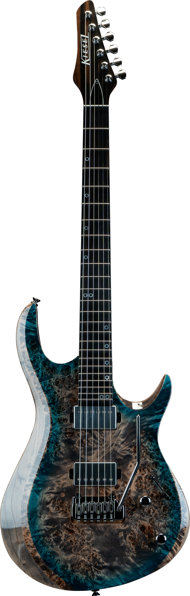

This is the a2 from Kiesel, a stunning build made from alder and maple. The neck of the guitar has no imperfections and the finish is flawless. Their Keisel direct mount lithium humbucker pickups provide a powerful and articulate tone. Here is a quote from a reviewer: "Like every other Kiesel/Carvin I've owned, the sustain is magic. Decades of old wives tales have convinced guitarists that great sustain comes from Les Pauls, but it's just not true. Kiesel guitars ring for days, and you also get that great snap and attack from bolt-on construction" - Sublyme. Arcording to them, the guitar is very comfortable to hold and to play aswell as being lightweight.
Keisel guitars credit